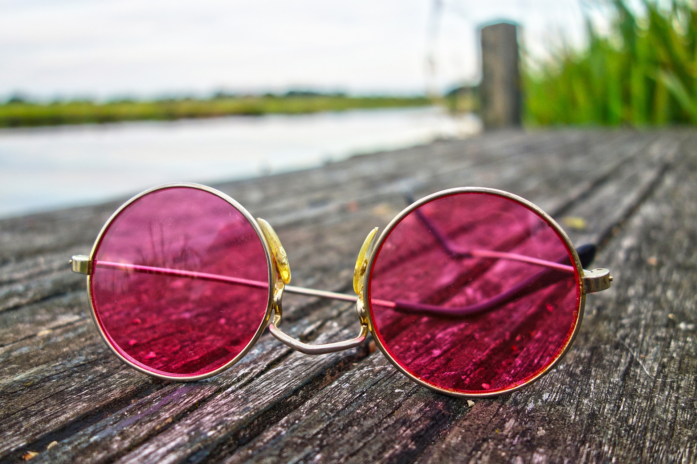

Los problemas de la visión se pueden originar por defectos refractivos o patologías. Los primeros impiden que tengamos una buena visión por un desbalance en la óptica del ojo, pero se pueden resolver de manera muy fácil con correcciones ópticas como gafas, lentes de contacto o cirugía refractiva. Entre ellos encontramos la Miopía, el Astigmatismo, la Hipermetropía y la Presbicia.